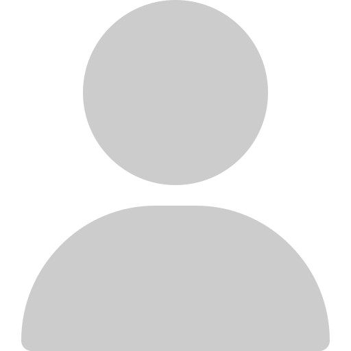

Click the  icon above your Name to mark yourself as the current selector. Click on the Name buttons to temporarily remove those who are unavailable. Spin the wheel then use Download Video to post in the Teams chat.
